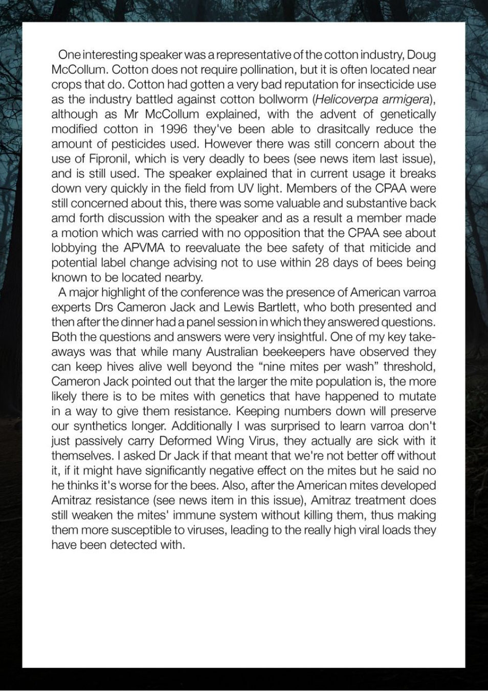

Oneinteresting speaker was arepresentative of the cotton industry, Doug
McCollum. Cotton does not require pollination, but it is often located near
crops that do. Cotton had gotten a very bad reputation for insecticide use
as the industry battled against cotton bollworm (Helicoverpa armigera),
although as Mr McCollum explained, with the advent of genetically
modified cotton in 1996 they've been able to drasitcally reduce the
amount of pesticides used. However there was still concern about the
use of Fipronil, which is very deadly to bees (see news item last issue),
and is still used. The speaker explained that in current usage it breaks
down very quickly in the field from UV light. Members of the CPAA were
still concerned about this, there was some valuable and substantive back
amd forth discussion with the speaker and as a result
a member made
a motion which was carried with no opposition that the CPAA see about
lobbying the APVMA to reevaluate the bee safety of that miticide and
potential label change advising not to use within 28 days of bees being
known to be located nearby.
A major highlight of the conference was the presence of American varroa
experts Drs Cameron Jack and Lewis Bartlett, who both presented and
then after the dinner had a panel session in which they answered questions.
Both the questions and answers were very insightful. One of my key take-
aways was that while many Australian beekeepers have observed they
can keep hives alive well beyond the “nine mites per wash” threshold,
Cameron Jack pointed out that the larger the mite population is, the more
likely there is to be mites with genetics that have happened to mutate
in a way to give them resistance. Keeping numbers down will preserve
our synthetics longer. Additionally
I was surprised to learn varroa don't
just passively carry Deformed Wing Virus, they actually are sick with
themselves.
I asked Dr Jack if that meant that we're not better off without
it, if it might have significantly negative effect on the mites but he said no
he thinks it's worse for the bees. Also, after the American mites developed
Amitraz resistance (see news item in this issue), Amitraz treatment does
still weaken the mites' immune system without killing them, thus making
them more susceptible to viruses, leading to the really high viral loads they
have been detected with.